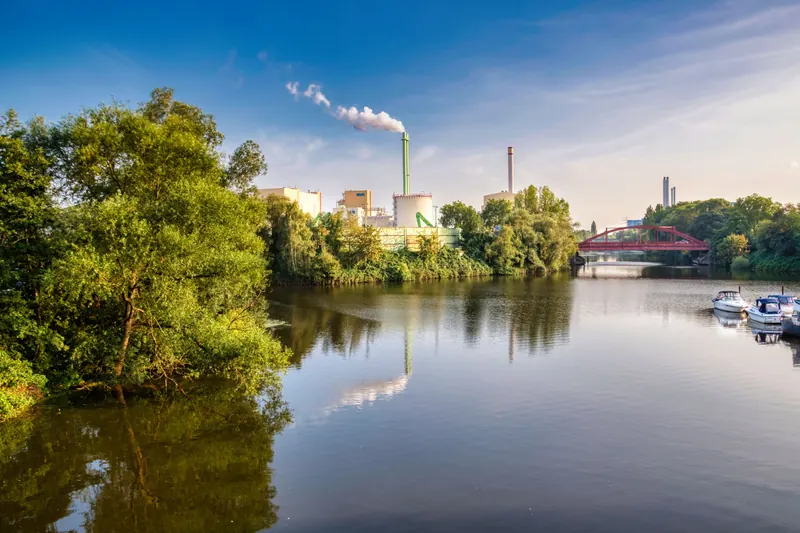

Kaderrichtlijn Water (KRW)
Oppervlaktewater als vertrekpunt
Welke industriële bronnen kunnen bijdragen aan gemeten waterkwaliteitsproblemen?
Van waterlichaam naar potentiële bron.

AquaWare Werktool · bronopsporing industriële lozingen
Eén onderzoeksomgeving die meetgegevens, bedrijfsactiviteiten, stoffen, vergunningen en lozingsroutes verbindt — om mogelijke bronnen te onderzoeken, prioriteiten te bepalen en vervolgacties gezamenlijk af te stemmen.
De uitdaging
Wie de waterkwaliteit wil verbeteren, begint met twee vragen: waar komt een gemeten stof vandaan, en welke bedrijven verdienen als eerste aandacht? De informatie om die vragen te beantwoorden staat verspreid over registers, vergunningen, meetreeksen en lokale kennis.
Kaderrichtlijn Water (KRW)
Welke industriële bronnen kunnen bijdragen aan gemeten waterkwaliteitsproblemen?
Van waterlichaam naar potentiële bron.
Richtlijn stedelijk afvalwater (UWWTD)
Welke industriële bronnen kunnen via de riolering bijdragen aan verontreiniging van RWZI’s?
Van RWZI naar potentiële bron.
Eén datagedreven methodiek voor bronopsporing en risicogestuurde prioritering.
Kaderrichtlijn Water (KRW / Water Framework Directive) · Richtlijn Stedelijk Afvalwater (UWWTD, herzien 2024 / Urban Waste Water Treatment Directive)
Hoe AquaWare werkt
Informatie over bedrijven, stoffen en lozingsroutes ligt verspreid over bronnen en organisaties. We verzamelen en koppelen die informatie, maken zichtbaar waar het risico zit en prioriteren: zo ontstaat een onderbouwde selectie van bedrijven, verwachte probleemstoffen en gerichte vervolgstappen.
Twee onderzoeksperspectieven, één dataketen
De ene vraag begint bij een meting, de andere bij het bedrijvenbestand. In de AquaWare Werktool lopen beide over dezelfde keten en komen ze samen in één onderbouwde selectie van mogelijke bronnen.
Welke stoffen en emissierisico’s zijn bij bedrijfsactiviteiten te verwachten?
Welke potentiële bronnen kunnen een gemeten stof verklaren?
geregistreerdverwacht (modelmatig)
De werkomgeving
Elke module belicht dezelfde gegevensbasis vanuit een andere vraag: waar, wat, wie en wat nu. Hieronder het dashboard voor één werkgebied, met 32 filters op stof, afvalwaterketen en lozingswijze.
Illustratief · fictieve bedrijfsgegevens
Bedrijven, RWZI’s, rioleringsgebieden en KRW-waterlichamen in één kaartbeeld met kaartlagen.
Prioritering, lozingswijze en KRW-stoffen samengevat voor het gekozen werkgebied.
Indicatieve relevantie van KRW-stoffen op basis van bedrijfsactiviteiten en beschikbare stofinformatie.
KRW-status, probleemstoffen en bedrijven met een mogelijke relatie tot het waterlichaam, afhankelijk van beschikbare gegevens over lozingsroutes.
Basisinformatie, afvalwaterketen, stoffen, vergunning, bemonstering, documenten en activiteit.
Meetwaarden per meetpunt, RWZI of bedrijfsbemonstering, met stofmatch naar bedrijven in het rioleringsgebied.
Bedrijven in volgorde van risicosignalen, met shortlist-status per bedrijf.
De gedeelde selectie van bedrijven waarvoor nader onderzoek is afgesproken.
Interventies met status, verantwoordelijke, onderbouwing en historie.
Wat het oplevert
Van een groot bedrijvenbestand naar een onderbouwde selectie van potentiële bronnen.
Onderzoekscapaciteit richten op relevante bedrijven, stoffen en gebieden.
Water- en milieuautoriteiten werken vanuit dezelfde informatie.
Selecties, beoordelingen en vervolgstappen zijn herleidbaar en kunnen worden vastgelegd.

Samenwerking in de keten
De Werktool ondersteunt bronopsporing en prioritering aan de voorkant en brengt de inzichten van waterschap en omgevingsdienst samen. Het VTH-systeem blijft leidend voor de verdere uitvoering.
Samen selecteren, analyseren en prioriteren welke bedrijven relevant zijn voor ZZS en KRW.
Eigen zaaksysteem
Via het VTH-systeem van de bevoegde organisatie. De Werktool levert de onderbouwing en houdt de status bij.
Resultaten uit onderzoek en toezicht stromen terug in het bedrijfsbeeld en de volgende prioritering.VTH-systeem blijft leidend.
Geen vier losse lijsten van dezelfde bedrijven, maar één gedeelde prioritering waar elke partner aan bijdraagt.
Gebruikers werken binnen hun eigen organisatie en werkgebied, met passende rechten; er blijft één gedeeld beeld.
De Werktool vervangt niets. Het is de gedeelde voorkant voor selectie en prioritering; formele zaken blijven waar ze horen.
Implementatie
De inrichting volgt uw opgave en de gegevens die beschikbaar zijn. Bestaande systemen blijven leidend; EU-hosting, DPIA en verwerkersovereenkomst zijn beschikbaar.
We bespreken uw opgave, beschikbare gegevens en gewenste werkwijze.
We richten de Werktool in voor uw werkgebied, gegevens en betrokken organisaties.
Uw organisatie werkt met de Werktool en ontwikkelt de aanpak verder op basis van praktijkervaring.

Kennismaken
Een stof die u niet kunt verklaren, een gebied met meer bedrijven dan u kunt overzien, of behoefte aan gerichte prioritering? We bespreken uw vraagstuk, de beschikbare gegevens en een mogelijke onderzoeksaanpak — en zeggen eerlijk of en hoe AquaWare kan helpen.